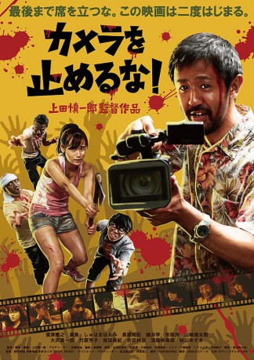

#11234 One Cut of the Dead
 
 IMDB-Wertung: 7.8 / 10
IMDB-Wertung: 7.8 / 10  Metascore: 89
Metascore: 89 
Auf einer verlassen Fabrikanlage aus dem Zweiten Weltkrieg will Nachwuchsregisseur Higurashi doch eigentlich nur einen blutigen Low-Budget-Zombie-Horrorfilm drehen. Sein nur wenig talentierter Cast versaut jedoch eine Szene nach der anderen. Aber dann spielt das Schicksal dem jungen Filmemacher in die Karten: Aus heiterem Himmel taucht nämlich eine waschechte Zombiehorde auf und im Nu sind alle Probleme gelöst. Higurashi schnappt sich nämlich gedankenschnell eine Kamera und hält einfach drauf, während Crew und Schauspieler in echter Panik vor den ganz realen und brandgefährlichen Untoten davonlaufen – oder ihnen dies eben nicht gelingt...
Jahr: 2017
Dauer: 96 Minuten
FSK: 16
Land: Japan Studio: Koch MediaTonspuren:
Untertitel: Deutsch,
Auflösung: 720p (1280x720) Größe: 4915 MB
Genre: Horror, Komödie
Regisseur: Shin'ichirô Ueda
Drehbuch: Shin'ichirô Ueda, Ryoichi Wada
Soundtrack: Shôma Itô, Kyle Nagai, Nobuhiro Suzuki
Darsteller:
- Takayuki Hamatsu als Director Higurashi
- Yuzuki Akiyama als Chinatsu
- Harumi Shuhama als Nao
- Kazuaki Nagaya als Ko
- Hiroshi Ichihara als Kasahara
- Mao als Mao
- Sakina Asamori als
- Takuya Fujimura als
- Ayana Gôda als
- Manabu Hosoi als
- Satoshi Iwagô als
- Kyôko Takahashi als
- Yoshiko Takehara als
- Tomokazu Yamaguchi als
- Shuntarô Yamazaki als
- Miki Yoshida als
- Shin'ichirô Ôsawa als
Datei: X:\HD-Eastern-Modern(N-Z)\One Cut of the Dead (2017, FSK16, 1280x720).mkv seit 24.05.2019
Festplatte: HD Eastern+Western
 Es gibt insgesamt 76 Filme in der Gruppe 'HD-Eastern-Modern(N-Z)'
Es gibt insgesamt 76 Filme in der Gruppe 'HD-Eastern-Modern(N-Z)'